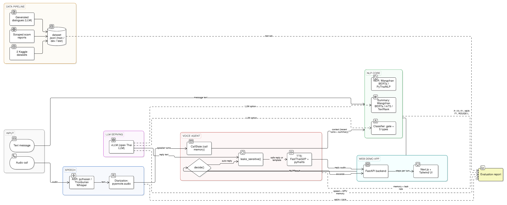
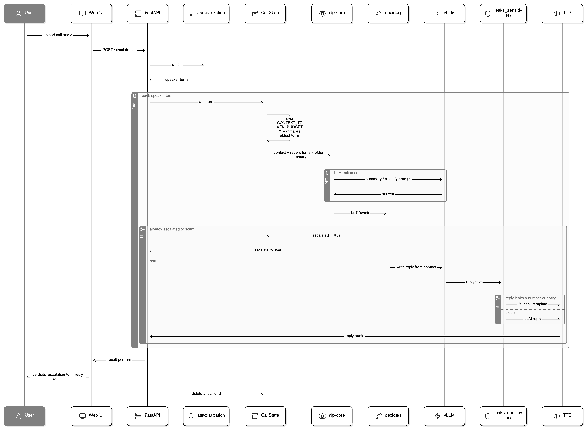
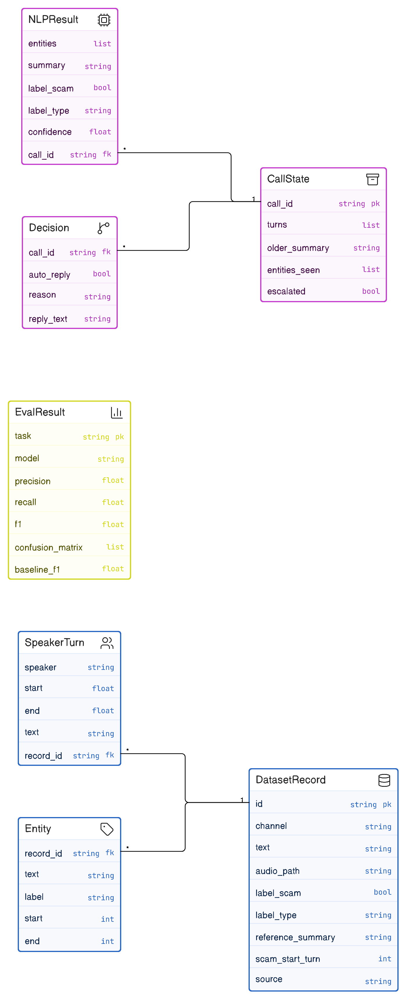

Thai Scam-Guard Assistant: Project Spec
Capability map
The project delivers two things: a working demo and real evaluation numbers. There is no real Thai scam dataset, so we make our own data: generate it with an LLM, scrape it from public sites, and use two Kaggle datasets. The project works in Thai only. It does not connect to any real platform (LINE/Messenger/IG/phone). The voice auto-reply agent is required.
First, a yes/no check (the "gate"): is it a scam? If yes, pick 1 of 5 scam types: fake-authority/call-center, romance, investment, phishing/OTP, lottery/prize.
Main tools at a glance
| Job | Main tool | Backup / compare with |
|---|---|---|
| Speech to text (ASR) | pythaiasr | Thonburian Whisper |
| Split speakers (diarization) | pyannote.audio | — |
| NER | WangchanBERTa | PyThaiNLP NER |
| Summary | WangchanBERTa / mT5-Thai | TextRank; LLM on vLLM |
| Scam classifier | WangchanBERTa | TF-IDF + LogReg (baseline); LLM on vLLM |
| LLM serving | vLLM + open Thai LLM (model not decided) | — |
| Reply text | LLM on vLLM | fixed templates |
| Voice reply (TTS) | FastThaiG2P + pythaitts | — |
| Web frontend | Next.js + Tailwind, designed in Figma | — |
| Web backend | FastAPI | — |
| Tests | pytest | — |
Modules
| Module | What it does | Depends on |
|---|---|---|
| data-pipeline | Generate scam and normal Thai call scripts and messages; scrape public scam-report sites; load and clean 2 Kaggle datasets; make labeled train/test data (gate + 5 types + NER spans) | — |
| llm-serving | Run one open LLM on our own GPU with vLLM; hold the prompts; own the speed and GPU memory settings for the whole pipeline | — |
| asr-diarization | Turn call audio into Thai text and split it by speaker A/B (compare pythaiasr and Thonburian Whisper) | data-pipeline |
| nlp-core | Run NER, summary, and scam classifier (gate + 5 types) on call text or message text; LLM version of summary and classifier to compare | data-pipeline, llm-serving |
| tts-voice-agent | Keep call memory; decide whether to auto-reply; have the LLM write a safe Thai reply and speak it (FastThaiG2P + TTS) for calls that are not important | nlp-core, llm-serving |
| web-demo-app | Standalone web app (Next.js + FastAPI, UI designed in Figma): upload audio or type text, run the pipeline, show transcript/diarization, NER, summary, verdict + type, and play the TTS reply | asr-diarization, nlp-core, tts-voice-agent |
| evaluation-report | Scripts that compute the numbers for the written report: precision/recall/F1 (gate + type), NER F1, summary quality (ROUGE/human), ASR WER, diarization DER, LLM vs. WangchanBERTa, call memory, reply safety, speed and GPU memory | data-pipeline, llm-serving, asr-diarization, nlp-core, tts-voice-agent |
Build order: data-pipeline and llm-serving at the same time, then asr-diarization and nlp-core at the same time, then tts-voice-agent, then web-demo-app. evaluation-report starts as soon as nlp-core and asr-diarization give their first output.
Diagrams
Made in Eraser. Click a diagram to open it full size, or edit them in Eraser.



Decisions for the whole project
Runtime: Python 3.10+ for all pipeline modules.
Repo: one git repo for everything.
Web frontend: Next.js (React, TypeScript) + Tailwind. UI designed in Figma and pulled into code with Figma MCP.
Web backend: FastAPI. It turns the pipeline modules into REST endpoints for the frontend.
ASR: pythaiasr (wav2vec2) is the main choice. The eval report compares Thonburian Whisper against it. Whisper goes into the live demo only if it is clearly better.
Diarization: pyannote.audio (works with any language), run on generated 2-speaker audio. There is no diarization model made for Thai.
NER: PyThaiNLP NER or a token classifier built on WangchanBERTa.
Summary: fine-tuned WangchanBERTa / mT5-Thai. If that takes too long to build, use TextRank instead (it picks the key sentences from the text).
Scam classifier: fine-tuned WangchanBERTa, plus a simple TF-IDF + LogReg model as the baseline. The eval report compares the two.
LLM: one open Thai LLM served locally with vLLM. It gives nlp-core an extra summary and classifier option, and it writes the voice agent's reply text. Call text never goes to an outside LLM API.
Call memory: the voice agent remembers every turn of the current call, so a scam that only shows up after several turns is still caught. Memory is deleted when the call ends.
Context budget: text sent to nlp-core and the LLM has a fixed token limit. Recent turns go in word for word; older turns are replaced by a short summary.
Speed and memory: all models load once at server start and share one GPU. llm-serving sets the vLLM limits (quantization,
--gpu-memory-utilization,--max-model-len) so everything fits. Target: under about 15s per input.Testing: pytest to check the code works; separate eval scripts for model scores.
Key library links
ASR: pythaiasr
G2P: FastThaiG2P
TTS: repo not decided yet (see tts-voice-agent open questions)
Diarization: pyannote-audio
LLM serving: vLLM
Module: data-pipeline
Objective. There is no real Thai scam dataset for calls or messages. This module makes the labeled data that every other module trains or tests on. It includes generated scam/normal dialogues (turned into audio with TTS, plus transcripts), generated scam/normal text messages, scam-report text scraped from public sites, and the two Kaggle datasets. All of it is cleaned and merged into one format (gate + 5 types + NER spans + reference summary).
Used by: all other modules. evaluation-report uses the test split.
Success: one labeled dataset with a version number. It has calls and messages, scam and normal, and all 5 scam types. The train/dev/test split is fixed, so the team never needs to rebuild it.
Tech stack.
- Language Python 3.10+
- Handle data
pandas,jsonlines - Scraping
requests+beautifulsoup4 - Generate text LLM API (provider and budget not decided yet)
- Text to audio pythaitts (same as in tts-voice-agent)
Commands.
Scrape: python -m data_pipeline.scrape --source <name> --out data/raw/<name>.jsonl
Synthesize: python -m data_pipeline.synthesize --type <scam_type|benign> --n 200 --out data/synthetic/
Clean/merge: python -m data_pipeline.build_dataset --out data/processed/dataset.jsonl
Split: python -m data_pipeline.split --ratio 0.7,0.15,0.15 --seed 42
Test: pytest modules/data_pipeline/testsRecord schema (one JSON object per line in data/processed/dataset.jsonl):
{
"id": "msg_00042",
"channel": "call | message",
"text": "...",
"audio_path": "data/synthetic/audio/msg_00042.wav",
"speaker_turns": [{"speaker": "A", "start": 0.0, "end": 3.2, "text": "..."}],
"label_scam": true,
"label_type": "phishing_otp",
"entities": [{"text": "0812345678", "label": "PHONE", "start": 12, "end": 22}],
"reference_summary": "...",
"scam_start_turn": 3,
"source": "synthetic | kaggle_jxxn03x | kaggle_kkorakott | scraped_<site>"
}label_type is one of fake_authority, romance, investment, phishing_otp, lottery, or null when label_scam is false. scam_start_turn is the index of the first speaker turn where the scam shows; it is null for normal records and for messages.
Testing strategy. pytest for scrapers (test on saved sample pages, not the live internet), cleaners (remove duplicates, hide personal data), and a schema check on every merged record. Unit tests can't tell if the data is good. So after each generated batch, the team reads a sample (20 records per type) to check that it looks real and the labels are right, before merging. build_dataset.py stops with an error if any record fails the schema check, or if any scam type has too few examples.
Boundaries.
Always: check every record against the schema before merging; keep raw scraped data apart from cleaned data; remove phone numbers and names from scraped real text before adding it.
Ask first: choosing the LLM/API provider (it costs money); adding a new site to scrape (check its terms of use first).
Never: scrape or include text that names a real private person as a scammer or victim; commit API keys to git.
Success criteria.
At least 150 labeled examples per scam type plus 150 normal ones, across both calls and messages.
Fixed 70/15/15 train/dev/test split, stratified by label_type, committed as
data/processed/{train,dev,test}.jsonl.Every record passes the schema check.
asr-diarization gets a set of records with audio (made with TTS), correct transcripts, and speaker turns.
At least 50 scam calls where the scam only shows after several normal turns (
scam_start_turnof 4 or more), for call memory tests.
Open questions.
Which LLM/API do we use to generate Thai dialogues, and who pays for it?
Do the scraped sites' terms of use let us share their text in our report or repo?
How real must the generated data be? Should a native Thai speaker check a sample before we train on it?
Module: llm-serving
Objective. Run one open LLM on our own GPU with vLLM. nlp-core uses it as an extra summary and scam-classifier option, to compare against WangchanBERTa. tts-voice-agent uses it to write auto-reply text. This module also owns the speed and GPU memory settings, so every model in the pipeline fits on the demo computer and a full run stays under about 15s.
Used by: nlp-core (LLM summary + LLM classifier), tts-voice-agent (reply text), evaluation-report (speed and GPU memory numbers).
Success: one local vLLM server with an OpenAI-compatible API, one fixed prompt per job, and settings that fit next to the other models on the demo GPU.
Tech stack.
- Language Python 3.10+
- Serve the LLM vLLM (OpenAI-compatible server)
- Model open LLM with good Thai (not decided; see Open questions)
- Client
openaiPython client pointed at the local server - Smaller weights AWQ 4-bit or FP8 quantization
Commands.
Start server: vllm serve <model> --max-model-len 8192 --gpu-memory-utilization 0.6 --enable-prefix-caching
Health check: curl http://localhost:8000/v1/models
Benchmark: python -m llm_serving.bench --testset data/processed/test.jsonl
Test: pytest modules/llm_serving/testsCode style. Every LLM call goes through one client. Each job has its own prompt file, with a version number:
JOBS = {"summary": 200, "classify": 20, "reply": 80} # job -> max output tokens
class LLMClient:
def complete(self, job: str, context: str) -> str:
prompt = load_prompt(job).format(context=context) # prompts/<job>.v<N>.txt
...Speed and memory.
Quantization: use AWQ 4-bit or FP8 weights so the LLM leaves room for the other models.
--gpu-memory-utilization: caps vLLM's share of GPU memory, so WangchanBERTa, pythaiasr and pyannote still fit. 0.6 is a starting value; tune it on the demo computer.--max-model-len: set it to the call memory context budget, not the model's maximum. A shorter length means a smaller KV cache.Prefix caching: each job's prompt starts with the same fixed text on every request, so vLLM reuses it instead of processing it again.
Short outputs: each job has a max output length (see
JOBS). The classifier answers with one label, not an explanation.Other models: WangchanBERTa and pythaiasr run in FP16 on the GPU. Every model loads once when the backend starts, never per request.
Timing: log the time of each stage (ASR, diarization, nlp-core, LLM, TTS) on every run, so we know where the 15s goes.
Testing strategy. pytest with a fake LLM client (CI has no GPU) for prompt building and output parsing. bench.py records tokens per second, time to first token, and peak GPU memory. These numbers go to evaluation-report.
Boundaries.
Always: keep every LLM call behind
LLMClient; turn the classifier's answer into one of the fixed labels, and treat anything else as "unknown", never a guess; log model name, prompt version, and time for every call.Ask first: changing the model (every LLM score in the report changes); raising
--gpu-memory-utilizationif the other models then stop fitting.Never: send call text to an outside LLM API; let the LLM decide between escalate and reply (that stays in the voice agent's rules).
Success criteria.
The vLLM server runs on the demo computer next to the other models with no out-of-memory errors.
Peak GPU memory and the time of each stage are logged and shown in evaluation-report.
With the LLM turned on, a full demo run stays under about 15s per input.
Open questions.
Which model? It needs good Thai and must fit the demo GPU. Candidates to test: Typhoon, OpenThaiGPT, Qwen.
How much GPU memory does the demo computer have? This decides the model size and quantization.
Should data-pipeline also use this server to generate data, instead of a paid LLM API?
Module: asr-diarization
Objective. Turn call audio into Thai text, split by speaker (A/B). Then nlp-core can run NER, summary, and classification on text instead of audio. This module is only for calls. Messages go straight to nlp-core.
Used by: nlp-core (text + speaker turns), web-demo-app (shows the text live), evaluation-report (WER/DER numbers).
Success: for a generated 2-speaker call, produce text split by speaker with an OK word error rate (WER). Processing takes no longer than the call itself.
Tech stack.
- Language Python 3.10+
- Speech to text pythaiasr (main model, based on wav2vec2)
- Compare with Thonburian Whisper (used in the demo only if clearly better)
- Split speakers pyannote.audio (no Thai-only model exists)
- Read/write audio
torchaudio,soundfile
Commands.
Run ASR: python -m asr_diarization.transcribe --audio <path> --model pythaiasr
Run diarization: python -m asr_diarization.diarize --audio <path>
Full pipeline: python -m asr_diarization.pipeline --audio <path> --out transcript.json
Benchmark ASR: python -m asr_diarization.bench --model pythaiasr,thonburian_whisper --testset data/processed/test.jsonl
Test: pytest modules/asr_diarization/testsCode style. Every ASR model uses the same interface, so pipeline.py and bench.py work with any of them:
class ASRBackend(Protocol):
def transcribe(self, audio_path: str) -> str: ...
class PyThaiASR(ASRBackend):
def transcribe(self, audio_path: str) -> str:
...pipeline.py outputs the same speaker_turns format as data-pipeline's schema, so we can compare the correct answers with the model output directly.
Testing strategy. pytest for the pipeline interface with short test audio clips. CI does not run the real model; it uses a fake (mock) one. bench.py computes WER/CER and diarization error rate (DER) on data-pipeline's test split. These numbers go to evaluation-report. They are not pass/fail tests.
Boundaries.
Always: keep ASR models easy to swap through the shared interface; log which model and version made each transcript.
Ask first: before making Thonburian Whisper the demo default, if it makes the demo much slower.
Never: switch to a different model on error without telling the caller.
Success criteria.
The full pipeline (audio in, text + speaker turns out) runs on the generated test set without crashing.
evaluation-report shows WER and DER numbers for both pythaiasr and Thonburian Whisper.
We pick the demo's default model by weighing WER against speed.
Open questions.
Target WER: do we set a minimum, or just report the number and explain our choice?
Speed for the live demo: how many seconds per part of a call is OK on the demo computer?
Module: nlp-core
Objective. Take Thai text (call text from asr-diarization, or a message). Find named entities, write a short summary, and decide if it is a scam (the gate) and which of the 5 types it is (only when the gate says scam). Most of the project's NLP work happens in this module. Summary and classifier each also have an LLM version (through llm-serving), so the report can compare the LLM with WangchanBERTa.
Used by: tts-voice-agent (uses the scam result and summary to decide on a reply), web-demo-app (NER highlights, summary, verdict), evaluation-report (predictions to compute scores).
Success: three parts (NER, summary, classifier). Each one works and can be scored on its own. All three are called through one function, for both calls and messages.
Tech stack.
- Language Python 3.10+
- Tokenize + base NER PyThaiNLP
- NER + classifier WangchanBERTa fine-tuned with
transformers(airesearch/wangchanberta-base-att-spm-uncased) - Baseline classifier TF-IDF + LogReg with
scikit-learn(to compare against in the eval report) - Summary fine-tuned WangchanBERTa / mT5-Thai
- Summary backup TextRank (PyThaiNLP or
sumy) - LLM option prompted LLM on vLLM (through llm-serving; for summary and classifier)
Commands.
Train classifier: python -m nlp_core.classify.train --data data/processed/train.jsonl
Train NER: python -m nlp_core.ner.train --data data/processed/train.jsonl
Run inference: python -m nlp_core.pipeline --text "<input>"
Evaluate: python -m nlp_core.eval --testset data/processed/test.jsonl
Test: pytest modules/nlp_core/testsCode style.
@dataclass
class NLPResult:
entities: list[Entity]
summary: str
label_scam: bool
label_type: str | None
confidence: float
def analyze(text: str) -> NLPResult:
entities = ner.extract(text)
summary = summarizer.summarize(text)
label_scam, label_type, confidence = classifier.predict(text)
return NLPResult(entities, summary, label_scam, label_type, confidence)One analyze() function handles both calls and messages, because both become plain text before they reach this module. For a live call, the text is the call memory context from tts-voice-agent (recent turns plus a summary of older ones), not only the newest turn. The summarizer and classifier each have a WangchanBERTa and an LLM version behind the same interface; a config setting picks which one runs.
Testing strategy. pytest for the pipeline interface and the steps before and after the model (tokenization, entity span alignment), using small fixed test inputs. Model quality is measured, not unit-tested. eval.py reports precision/recall/F1 per scam type and overall, entity-level NER F1, and ROUGE-L for summaries on data-pipeline's test set. These numbers go straight to evaluation-report. The baseline and the LLM run next to the fine-tuned model so the report can compare all three. The baseline comparison is required.
Boundaries.
Always: run the baseline, the fine-tuned model, and the LLM on every eval, so the comparison stays up to date; keep NER, summary, and classifier callable on their own.
Ask first: before replacing the fine-tuned summary model with TextRank only (a smaller scope changes what the report can claim).
Never: report a score computed on training data as if it came from the test set.
Success criteria.
Both the gate and the 5-type classifier report precision/recall/F1 per class + macro-average on the test set. The fine-tuned model beats the TF-IDF baseline.
The LLM classifier and LLM summary report the same scores on the same test set, next to WangchanBERTa.
NER reports entity-level F1 on the test set.
Summary reports ROUGE-L on the test set (and, if there is time, scores from a small human-rated sample).
pipeline.py runs fully on both call text and messages. web-demo-app does not need separate code for the two.
Open questions.
Do we set a minimum F1 or accuracy? Or is beating the baseline with a real number enough?
Human rating of summaries: does the team have time to rate a small sample, or is ROUGE-L alone OK?
Module: tts-voice-agent
Objective. Take nlp-core's output for a live call (scam result + summary + entities). Decide if the assistant should reply by voice. If yes, the LLM writes a short Thai reply, a safety check reads it, and TTS speaks it. Calls that are not important (low scam risk, no sensitive request found) get an automatic reply. Suspicious calls go to the user instead. The agent also keeps call memory: it remembers every turn of the current call, so a scam that only shows up after several turns is still caught.
Used by: web-demo-app (plays the reply, shows the decision), evaluation-report (decision accuracy, if the team labels a test set for decisions).
Success: a decision function that always gives the same answer for the same input and can explain why, call memory that catches scams that build up slowly, replies that never leak data from the call, and Thai speech that sounds natural enough to show live.
Tech stack.
- Language Python 3.10+
- Letters to sounds FastThaiG2P (grapheme-to-phoneme)
- Make speech pythaitts (or the TTS engine inside it; exact repo not decided, see Open questions)
- Decision simple if/else rules (no ML model needed, because nlp-core already gives structured output)
- Reply text LLM on vLLM (through llm-serving; fixed templates as the backup)
- Call memory
CallStatein our own code (in memory, one per call, deleted when the call ends)
Commands.
Decide + reply: python -m tts_voice_agent.respond --nlp-result result.json --out reply.wav
Replay a call: python -m tts_voice_agent.simulate --testset data/processed/test.jsonl --id <call_id>
Test: pytest modules/tts_voice_agent/testsCode style.
@dataclass
class CallState:
turns: list[Turn]
older_summary: str # summary of turns that no longer fit the budget
entities_seen: list[Entity] # kept for the whole call, even after their turns are summarized
escalated: bool = False # once True, stays True until the call ends
def context(self) -> str:
# recent turns word for word + older_summary, within CONTEXT_TOKEN_BUDGET
...
def on_turn(state: CallState, turn: Turn) -> Decision:
state.add(turn)
result = nlp_core.analyze(state.context())
decision = decide(result, state)
if decision.auto_reply:
decision.reply_text = safe_reply(result, state)
return decision
def decide(result: NLPResult, state: CallState) -> Decision:
if state.escalated:
return Decision(auto_reply=False, reason="call already escalated")
if result.label_scam and result.confidence >= ESCALATE_THRESHOLD:
state.escalated = True
return Decision(auto_reply=False, reason="high-confidence scam, escalate to user")
if result.label_scam:
state.escalated = True
return Decision(auto_reply=False, reason="low-confidence scam, escalate for review")
return Decision(auto_reply=True, reason="benign")
def safe_reply(result: NLPResult, state: CallState) -> str:
text = llm.complete("reply", state.context())
if leaks_sensitive(text, state.entities_seen): # any digit, OTP, bank or phone number, or entity from the call
return pick_template(result)
return textThresholds and CONTEXT_TOKEN_BUDGET are named constants, not raw numbers in the code, so we can change them in one place and quote them in the report. CONTEXT_TOKEN_BUDGET stays below vLLM's --max-model-len, with room left for the prompt and the answer.
Call memory and context. Each new turn is added to CallState, and nlp-core reads the whole call context, not only the newest turn. Recent turns go in word for word. When they no longer fit the budget, the oldest turns are replaced by a short summary (made by nlp-core's summarizer). The entities seen and the escalated flag are kept for the whole call. Memory lives only while the call is open.
Testing strategy. pytest for decision.py with a table of (NLPResult, CallState, expected Decision) cases: each scam type, normal, confidence values right at the threshold, and a call that is already escalated. Call memory tests replay data-pipeline's slow-build scam calls turn by turn and check that the agent escalates no later than one turn after scam_start_turn. Context tests feed a very long call and check that context() never goes over the budget and still holds every entity. Reply safety tests give safe_reply fake LLM answers that contain phone numbers, OTPs, bank numbers and entities from the call; every one must fall back to a template. Unit tests can't check how natural the voice sounds. So before the demo, the team listens to about 10 samples and rates each one 1-5 (like a simple MOS score). The report lists this as a note, not a pass/fail test.
Boundaries.
Always: log the decision + reason for every turn, so the demo and report can show why and when the agent did or didn't reply; run every LLM reply through
leaks_sensitivebefore TTS.Ask first: the reply prompt and the backup templates. A reply should promise nothing and stay safe. It must not help a scammer confirm that a real person answered.
Never: let the auto-reply agent read back or confirm anything taken from the call (phone numbers, bank details, OTPs). An LLM reply with any number or any entity from the call is dropped and replaced by a template. Never keep call memory after the call ends.
Success criteria.
Decision function has 100% test coverage on its rule table.
For a normal nlp-core result, it makes a Thai .wav reply that plays.
For a scam result, it does not auto-reply. It sends an "escalate" flag to web-demo-app instead.
On the slow-build scam test calls, the agent escalates no later than one turn after
scam_start_turn. The report also shows the result with memory turned off, for comparison.leaks_sensitiveblocks 100% of the reply safety test cases.context()never goes overCONTEXT_TOKEN_BUDGET, even on the longest test call.
Open questions.
Exact confidence threshold for escalate vs. auto-reply: start with a rough guess, then tune it after nlp-core's classifier is trained and we know how reliable its confidence scores are.
How many recent turns stay word for word before older ones are summarized?
Can a later normal turn ever undo an escalation? (Current rule: no.)
Which pythaitts repo/package do we use exactly? (Several Thai TTS projects have similar names.)
Module: web-demo-app
Objective. A standalone web app, and the part of the project people see and use. You upload a fake call (audio file) or type a message, watch the full pipeline run, and see the result: transcript/diarization, NER highlights, summary, scam verdict + type, and the TTS auto-reply (played, or shown as "escalated to user"). For calls, the result updates turn by turn, so you can see the moment the agent escalates. We design the UI in Figma first, then build it.
Used by: demo audience (live demo), team (for building and testing).
Success: a demo that works, looks good, runs fast enough, and clearly shows what the pipeline does at each step.
Tech stack.
- Frontend Next.js (React, TypeScript) + Tailwind
- Design Figma, pulled into code with Figma MCP (design comes first; code matches it)
- Backend FastAPI (turns asr-diarization, nlp-core, and tts-voice-agent into REST endpoints)
- Audio browser
<audio>plays TTS replies; file upload for call audio
Commands.
Backend dev: uvicorn backend.main:app --reload
Frontend dev: npm run dev --prefix frontend
Backend test: pytest backend/tests
Frontend build: npm run build --prefix frontendCode style. Each backend endpoint is a thin wrapper over the pipeline modules, with no business logic:
@router.post("/simulate-call")
async def simulate_call(audio: UploadFile) -> CallResult:
transcript = asr_diarization.pipeline.run(audio)
state = tts_voice_agent.CallState()
steps = [tts_voice_agent.on_turn(state, turn) for turn in transcript.turns]
return CallResult(transcript=transcript, steps=steps)Frontend components call the backend through one typed API client, not with fetch calls spread across pages.
Testing strategy. Backend: pytest integration tests call each endpoint with test audio/text. They check the response format and that every pipeline step returned output. Frontend: check by hand against the Figma design before each demo practice; component tests (Vitest/RTL) are optional. Practice a full pipeline run at least twice before the live demo.
Boundaries.
Always: keep backend endpoints thin (they only call the modules in order; no model code copied from the modules); follow the approved Figma design, don't make up new layouts.
Ask first: adding a frontend library other than Next.js/Tailwind/the typed API client; changing the API format after the nlp-core/tts-voice-agent teams start using it.
Never: call any real external platform API (LINE/Messenger/IG/telephony); hardcode secrets in frontend code.
Success criteria.
Full pipeline runs live in the browser: upload audio or type a message, see transcript/diarization (calls only), NER highlights, summary, verdict + type, and either a TTS reply that plays or a clear "escalated" state.
For calls, the UI shows each turn and marks the turn where the agent escalated.
UI matches the approved Figma design.
A full demo run feels live during the demo (target: under about 15s per input; we can change this once we know how fast the models are).
Open questions.
Hosting: run on the demo computer, or put it online (e.g. a free plan) so others can try it before or after the demo?
Do we make the Figma design before connecting the backend, or at the same time? This decides whether frontend work can start before nlp-core/tts-voice-agent have real endpoints. We will probably need fake data either way.
Module: evaluation-report
Objective. Produce real evaluation numbers for every model in the pipeline, plus the comparisons the report is built around (transformer vs. baseline classifier vs. LLM, pythaiasr vs. Thonburian Whisper, call memory on vs. off). It also measures reply safety, speed per stage, and peak GPU memory. This module does not build models. It scores the models from asr-diarization, nlp-core, llm-serving and tts-voice-agent on data-pipeline's test set.
Used by: report readers, team (uses the numbers to make choices, e.g. which ASR model goes in the demo).
Success: every claim in the written report ("our classifier beats the baseline," "diarization works well enough") has a number behind it. That number comes from this module, uses the test set, and comes out the same every time the script runs.
Tech stack.
- Language Python 3.10+
- Classifier scores scikit-learn (precision/recall/F1, confusion matrix)
- NER scores seqeval (entity-level F1)
- Summary scores rouge-score (ROUGE-L)
- ASR scores jiwer (WER/CER)
- Diarization scores pyannote.metrics (DER)
- Charts
matplotlib,seaborn
Commands.
Run all evals: python -m eval.run_all --testset data/processed/test.jsonl --out eval/results/
Classifier eval: python -m eval.classify_eval
NER eval: python -m eval.ner_eval
Summarization eval: python -m eval.summarize_eval
ASR eval: python -m eval.asr_eval
Diarization eval: python -m eval.diarize_eval
Call memory eval: python -m eval.memory_eval
Reply safety eval: python -m eval.reply_safety_eval
Speed/memory eval: python -m eval.latency_eval
Test: pytest eval/testsResult schema. Each eval script writes one result file in this format, so no one has to recompute numbers by hand for the report:
{
"task": "scam_gate_classification",
"model": "wangchanberta_finetuned",
"precision": 0.91,
"recall": 0.88,
"f1": 0.895,
"confusion_matrix": [[45, 3], [5, 47]],
"baseline_f1": 0.79
}Testing strategy. pytest for the functions that compute the scores (fixed input, known correct score), because a bug here would make the report wrong without anyone noticing. Model quality is what the eval measures, so it isn't unit-tested. run_all.py checks that every result file was written, so a skipped eval can't slip into the report.
Boundaries.
Always: compute every score on test.jsonl only, never train/dev; write the model and data version into each result file.
Ask first: before changing the test split after any model has been scored on it (old comparisons would no longer be valid).
Never: hand-edit a result file to make a number look better than what the script produced.
Success criteria.
eval/results/ has one result file per task (classification gate, classification type, NER, summary, ASR, diarization, call memory, reply safety, speed and memory).
The report has at least: classifier P/R/F1 per class + macro-avg for baseline, WangchanBERTa and LLM; NER entity-level F1; summary ROUGE-L for WangchanBERTa/mT5 and LLM; ASR WER for both models; diarization DER; turns until escalation on slow-build calls, with memory on and off; reply leak rate; time per stage and peak GPU memory.
Every number in the written report comes from a file in eval/results/.
Open questions.
Do we need significance tests (e.g. bootstrap CI on F1), or are single numbers enough, since the generated test set is small?
Report file format: Markdown, Word, or PDF?